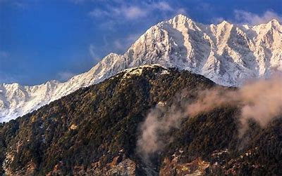
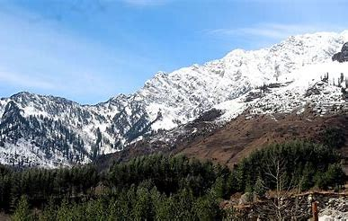

The Dhauladhars have a peculiar topography. Although mostly composed of granite, the flanks of the range exhibit frequent formations of slate (often used for the roofs of houses in the region), limestone and sandstone. Ascending from any side is difficult, given the near vertical incline. This calls for highly technical trekking and mountaineering. There is very little habitation on the range given the harsh conditions. But meadows abound near the crest providing rich pastures for grazing where large numbers of Gaddi shepherds take their flocks. The top of the crest is buried under vast expanses of thick snow. Triund, approached from the hill station of McLeod Ganj, is the nearest and most accessible snow line in the Indian Himalayas. The range has rich flora and fauna.
Dhauladhar Range

| Dhauladhar Range | |
|---|---|
|  | |
| Highest Peak | |
| Peak | Hanuman Tibba |
| Elevation | 5860m high |
| Coordinates | 32.336°N 77.051°E |
| Geography | |
| Countries | India |
| Borders on | Himachal Pradesh |